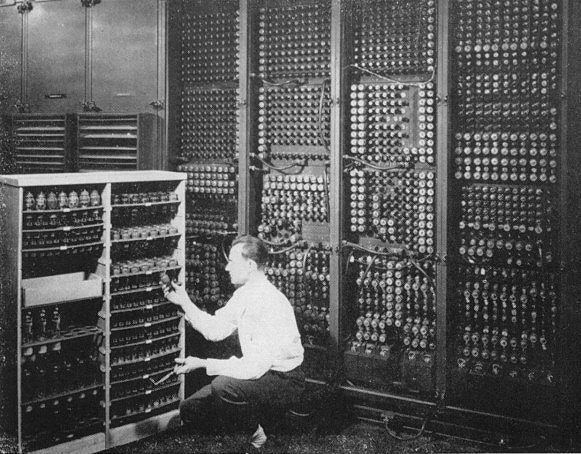

-
Inicio de la primera generación
-

1945
La primer computadora de propósito general construida en 1945 fue la ENIAC (Electronics Numerical Instructions Automatica Calculator) con partes basadas en el ABC. Está relacionada con la Colossus Mark ll.
-
1952
Grace Murray Hooper desarrolló el primer compilador, un programa que puede traducir enunciados parecidos al inglés en código binario llamado COBOL.